はじめに
Autonomous Database への接続には、104: クレデンシャル・ウォレットを利用して接続してみよう でご紹介した通り、ウォレットファイルを利用した証明書認証・SSL暗号化接続がデフォルトになっています。
しかし特定の条件下では、このウォレットを利用しないでセキュアに接続することが可能です。
本章では、ADBにおけるネットワーク・アクセスの種類とウォレットを利用しない接続方式について確認していきます。
前提条件
- ADBインスタンスが構成済みであること
※ADBインタンスの作成方法については、101:ADBインスタンスを作成してみよう を参照ください。
目次
所要時間 : 約30分
1. ADBにけるネットワーク・アクセスの種類
ADBでは、プロビジョニング時に以下の3つの中からネットワーク・アクセス・タイプを選択することができます。
- すべての場所からのセキュア・アクセス（パブリック・エンドポイント）
データベース資格証明（ウォレット）を持っているユーザーであれば、インターネット上の全てのIPアドレスから接続できる方式です。
- 許可されたIPおよびVCN限定のセキュア・アクセス（パブリック・エンドポイント）
上の[すべての場所からのセキュア・アクセス]に、特定のIPアドレス、CIDRブロック、VCNからのアクセスに限定するようアクセス制御リスト(ACL)を設定する方式です。
- プライベート・エンドポイント・アクセスのみ（プライベート・エンドポイント）
ADBインスタンスにパブリックIPを持たせず、プライベートIPを持たせる場合に選択します。すでに作成済みのVCN、サブネット内にADBインスタンスを配置します。指定したVCNからのトラフィックのみ許可され、アクセス制御はサブネットのセキュリティ・リスト(SL)またはネットワーク・セキュリティ・グループ(NSG)で行います。 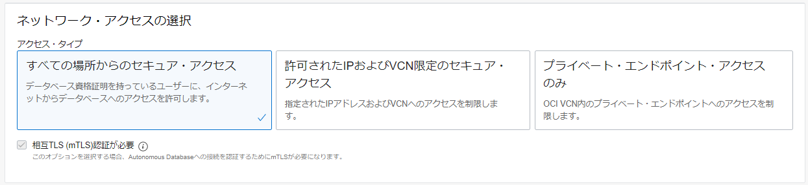
なお、ウォレットの差し替えが必要ですが、インスタンス作成後でもエンドポイントの変更は可能です。 また、接続経路は以下の3つの方法があります。
- インターネット接続
- IPsec VPNを介した接続
- FastConnect(Private Peering / Public Peering)を利用した接続
2. TLS接続の前提条件
クライアントはTCPS(Secure TCP)接続を介して、信頼できるクライアント認証局(CA)証明書を使用してADBに接続します。この相互TLS(mTLS)認証では、信頼できるクライアントCA証明書（ウォレット）を取得する必要があります。ADBではデフォルトでこのmTLS認証を使用しますが、特定の条件下でウォレットの必要ないTLS認証を使用できます。
TLS認証では、クライアントは信頼できる認証局(CA)のリストを使用してサーバーのCAルート証明書を検証します。発行元CAが信頼できる場合、クライアントはその証明書が本物であることを確認し、暗号化された安全な接続を確立します。ADBへのTLS接続は以下のクライアントでサポートされています。
- Oracle SQL DeveloperやOracle SQLclなどのJDK8u162以降のJDBC Thin Driverによる接続
- 以下のバージョンのOracle Call Interface(OCI) クライアント
- Oracle Instant Client/Oracle Database Client 19.13 - Linux x64のみ
- Oracle Instant Client/Oracle Database Client 19.14 (またはそれ以降) および 21.5 (またはそれ以降) - すべてのプラットフォーム
- TLS認証を使用したマネージドODP.NETまたはODP.NET Coreバージョン19.13または21.4（またはそれ以上）
また、TLS接続を使用するには、以下のどちらかのネットワーク・アクセスの条件を満たす必要があります。
- 1つまたは複数のアクセス制御リスト(ACL)を定義する
※ACLが定義されている場合、Autonomous Database詳細ページの[ネットワーク]のアクセス制御リスト：有効となります。
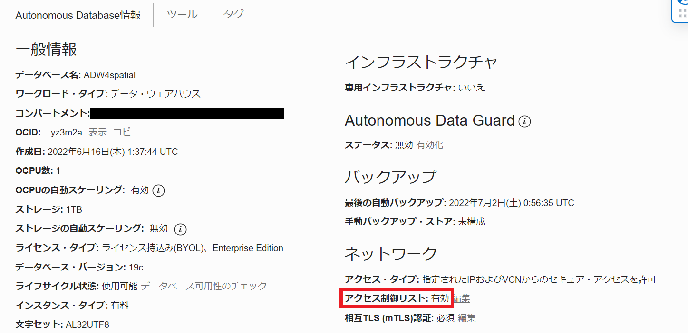
- ADBインスタンスがプライベートエンドポイントで構成されている
※プライベートエンドポイントで構成されている場合、Autonomous Database詳細ページの[ネットワーク]のアクセス・タイプ：仮想クラウドネットワークとなります。
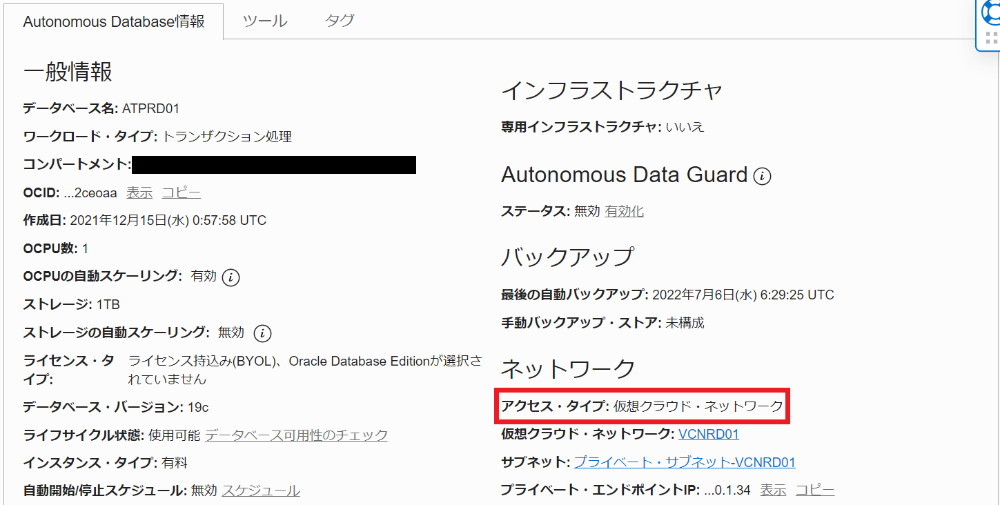
上のどちらかの条件を満たしている場合、[ネットワーク]の相互TLS(mTLS)認証：必須 となっていますが、編集ボタンから変更することができます。
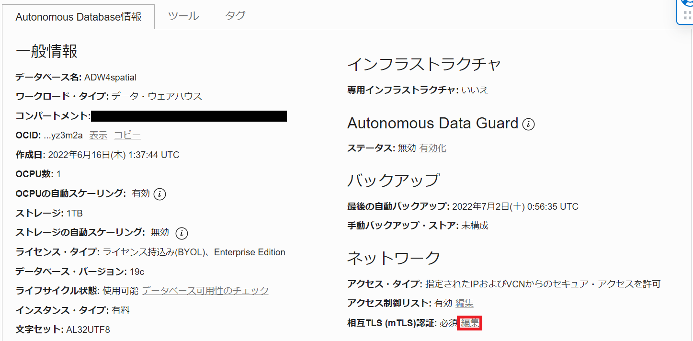
チェックを外し変更の保存をクリックします。
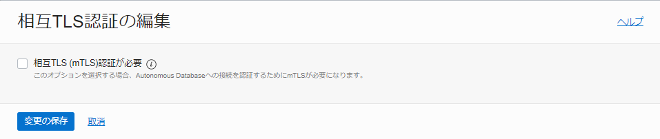
しばらく待つと相互TLS(mTLS)認証：必須ではないに変わっていることが確認できます。
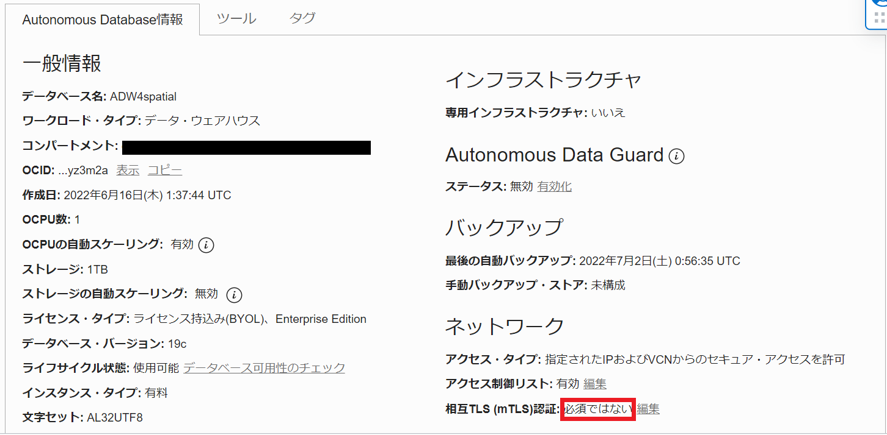
これでTLS接続を使用することができるようになります。
一点注意が必要なのは、この設定はmTLS認証が必須ではない、つまりTLS接続もmTLS接続も可能である、ということです。ウォレットを使用した接続ももちろん可能です。
3. TLS接続
それでは実際に、TLS接続でADBに接続してみたいと思います。
3-1. 仮想マシン作成
まずはクライアントとして仮想マシンを一台作成します。TLS接続がサポートされているクライアントがインストール済みのOracle Linux Cloud Developer イメージで作成します。詳しい手順はこちらをご参照ください。
3-2. アクセス制御リスト(ACL)の定義
今回はパブリック・エンドポイントでADBインスタンスを作成し、ACLを定義することでTLS接続を可能にします。作成した仮想マシンのパブリックIPアドレスを[アクセス制御リストの編集]画面で入力します。 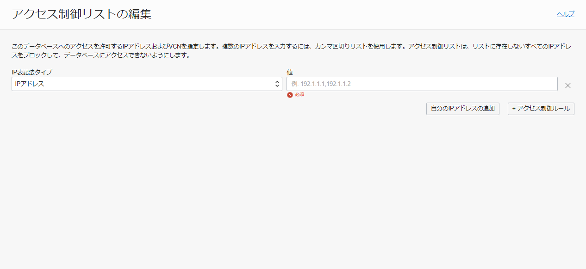
アクセス制御リストが更新されたら、2. TLS接続の前提条件で紹介した手順で、mTLS認証：必須ではないに更新します。
3-3. DB接続文字列の確認
DB接続に使用する文字列を確認します。 詳細画面からDB接続ボタンをクリックします。 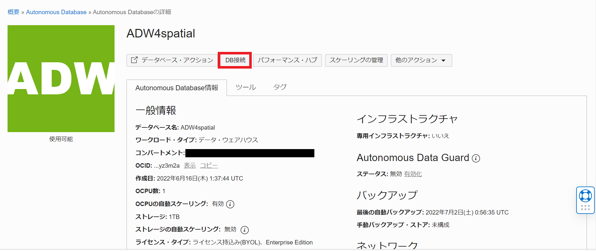
『ウォレットのダウンロード』と『接続文字列』という項目があります。 『接続文字列』では、TLS認証が相互TLSになっています。こちらをクリックし、TLSに変更します。 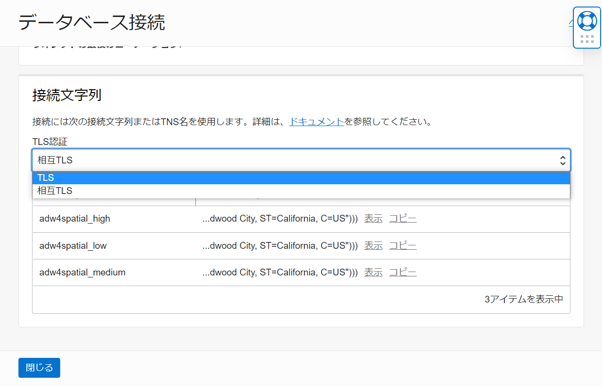
変更すると、TLS接続用の接続文字列に変わるので任意の接続サービスの文字列をコピーします。 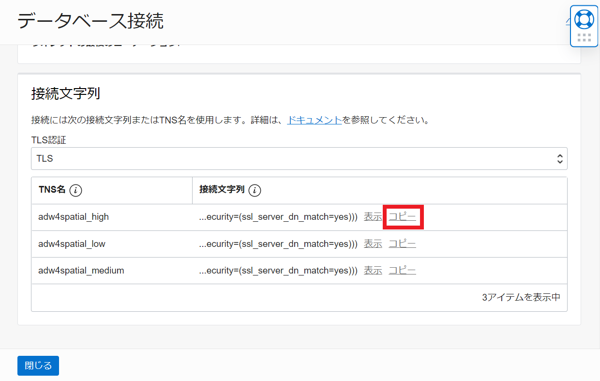
3-4. ADB接続
それではADBに接続していきます。 PUTTYなどのSSHクライアントツールを使って仮想マシンにアクセスします。 今回はSQLclを使って接続します。
sql admin/<password>@<コピーした文字列>
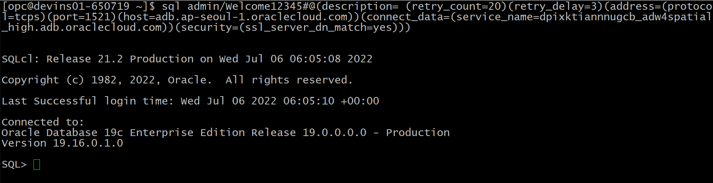
無事にADBに接続できました。
今回ご紹介したTLS接続は、ウォレット管理が不要になるため、mTLS接続より使いやすいといえます。またウォレットを介さないことにより接続レイテンシも向上します。 利用の前提条件が満たせる場合はご検討ください。
参考資料
以上で、この章は終了です。
次の章にお進みください。